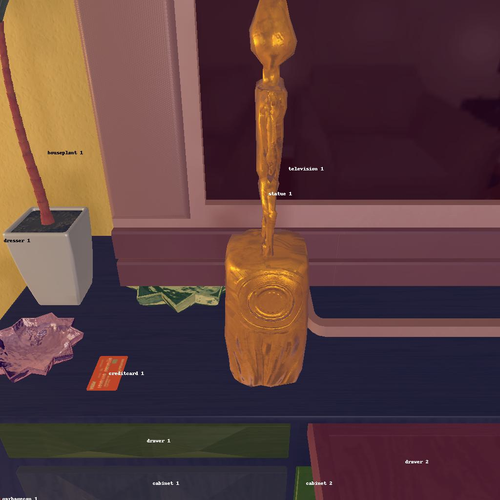

---------------------------------------------------------task: 7---------------------------------------------------------
--------------------------------------------------------------------------------------------------------------------------------------------------------------------
--------------------------------------------------------------------------------------------------------------------------------------------------------------------
Step:--------------------------------------------------------------------------9-------------------------------------------------------------------------------
----------------------------------------
VLM Prompt:
Image1:
**Instruction**
1. Analyze the provided image to identify all visible household objects, focusing on those relevant to the task description "put a creditcard in coffeetable."
2. Use the analysis of the image and the task hint "The agent must find an object of the desired type, pick it up, find the correct location to place it, and put it down there." to answer the question: what is the most reasonable action in the choices for the task description "put a creditcard in coffeetable"?
4. Decide and write the answer using the template: The answer is: (i): , where i is the real number. If there is no desired object in the image, search every place based on **Initial Observation** to find the object. And if no one is exactly correct, choose a similar answer.
**Initial Observation**
You are in the middle of a room. Looking quickly around you, you can see armchair (1-2), dresser (1), garbagecan (1), cabinet (1-4), drawer (1-4), coffeetable (1), sidetable (1), sofa (1)
**Answer Choices**
(1): go to armchair 1
(2): go to armchair 2
(3): go to dresser 1
(4): go to garbagecan 1
(5): go to drawer 1
(6): go to drawer 2
(7): go to cabinet 2
(8): go to drawer 3
(9): go to cabinet 3
(10): go to drawer 4
(11): go to cabinet 4
(12): go to sidetable 1
(13): go to sofa 1
(14): open cabinet 1
(15): close cabinet 1
(16): examine cabinet 1
**Answer**
Let's think step by step by following the instructions.
----------------------------------------
----------------------------------------
Original Response:
The task is to "put a creditcard in coffeetable." From the image provided, we can see a creditcard on the floor next to the statue. Therefore, the first action would be to pick up the creditcard. However, this action is not listed in the answer choices.
Since the action of picking up the creditcard is not an option, we must choose the next most reasonable action. The task description hints that the agent must find the correct location to place the creditcard, which is the coffeetable. However, "go to coffeetable" is not one of the answer choices either.
Based on the **Initial Observation**, the coffeetable is in the room, but since it is not listed in the answer choices, we cannot directly go to it. Therefore, we must choose an action that could lead us closer to eventually putting the creditcard on the coffeetable.
Given the answer choices, the most reasonable action would be to go to an object near the coffeetable, in hopes that it will bring us closer to the final goal. Since the coffeetable is not specified in the answer choices and no other actions seem directly related to the task, we are left to infer based on the objects mentioned in the **Initial Observation**.
The closest action that could potentially lead to the coffeetable is (12): go to sidetable 1, as side tables are often located near coffee tables in a living room setup.
Therefore, the answer is: (12): go to sidetable 1.
----------------------------------------
----------------------------------------
>>> Refine Original VLM Response and Get Pure Action: No action
----------------------------------------
-----------------------------------------------------------------
Running time: 12.571614503860474 seconds
Total Money: 2.165320000000001
-----------------------------------------------------------------
-----------------------------------------------------------------
Text Observation:Nothing happens.
-----------------------------------------------------------------
UNSUCCEED